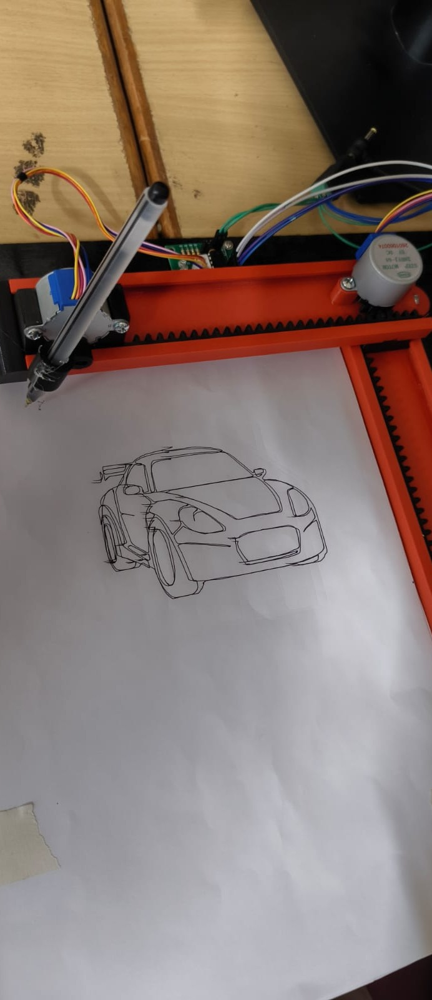

PROJECT 03
Computer Numerical Control (CNC) 2D Vector Graphics Plotter
A computer-controlled 2D plotting machine that converts vector-based graphics or drawings into precise mechanical movements to draw them on a physical surface.


Overview
A computer-controlled 2D plotting machine that converts vector-based graphics or drawings into precise mechanical movements to draw them on a physical surface.
Procedure
The plotter takes a 2D vector drawing and converts the drawing instructions into controlled machine movements. The controller coordinates the X and Y axes while the pen mechanism is raised or lowered as required. The motors then move the plotting mechanism along the programmed paths to reproduce the vector graphic on a physical surface.
FocusCNC and computer-controlled motion
System2D vector graphics plotting
Practical Experience3D printing, circuit building and prototyping